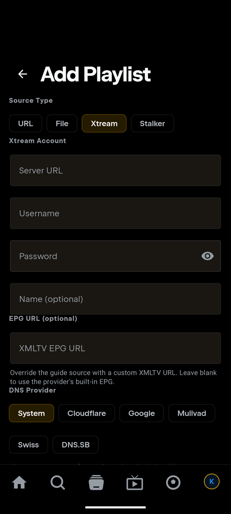

🔑 Add an Xtream Codes login
Use this if your provider gave you a server URL (portal), username and password — the classic "Xtream Codes API" details. If they only gave you one long link, that works too: paste it and Tuvora fills in the rest.
📱 On your phone
- Tap the IPTV tab → Add IPTV provider. (Or: profile avatar → Settings → Integrations → IPTV (Xtream Codes) → Add Playlist.)
- Set Source Type to Xtream.
- Fill the Xtream Account form:
- Server URL — the portal, e.g.
http://host:port(include the port; no/get.phpneeded) - Username and Password — exactly as your provider sent them
- Name (optional) — e.g. "Main sub"
- Server URL — the portal, e.g.
- Press Add Playlist. Tuvora verifies the login, then indexes your channels, movies and series.

💡 Shortcut: got a full link like
http://host:port/get.php?username=…&password=…? Paste it into Server URL — username and password fill in automatically.📺 On your TV
- Open IPTV in the sidebar → Add IPTV provider → Source Type Xtream.
- Pick your input style: Enter details (Server URL / Username / Password) or Paste link (one field for the whole
get.phplink). - Press Add Playlist.

💡 Skip remote-typing: choose Add from phone instead — scan the QR and enter the same details on your phone.
Troubleshooting
- "Verifying…" fails? Double-check the port in Server URL (e.g.
:8080) and tryhttp://instead ofhttps://— many portals are HTTP-only. - Login rejected? Confirm the username/password by logging in wherever your provider's panel lives, or test the
get.phplink in VLC. Some providers limit simultaneous connections — stop other players first. - Adds but sections are empty? Large accounts index in the background; give it a minute. If a section stays empty, your subscription may not include it.
- Still stuck? Open a "Playlist / source won't work" report.
🔒 Your Xtream details are credentials. Never post your server URL, username, or password publicly — use
http://REDACTED:8080, user REDACTED in screenshots and bug reports.